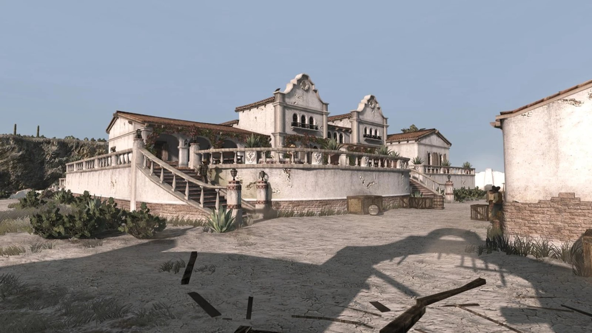
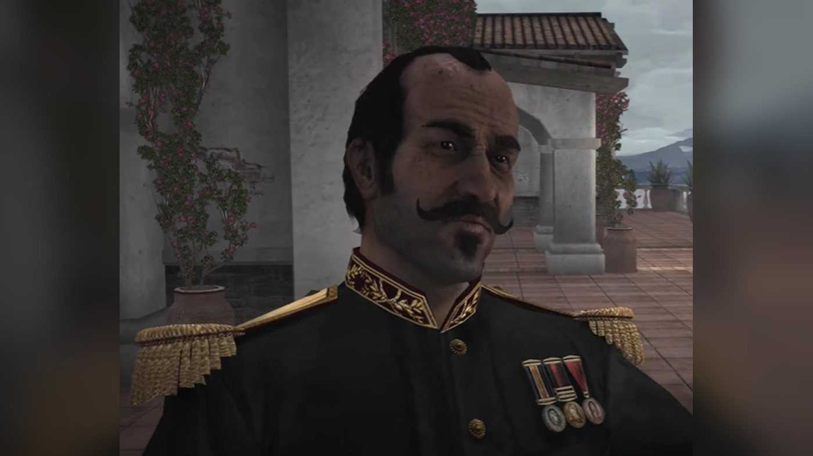
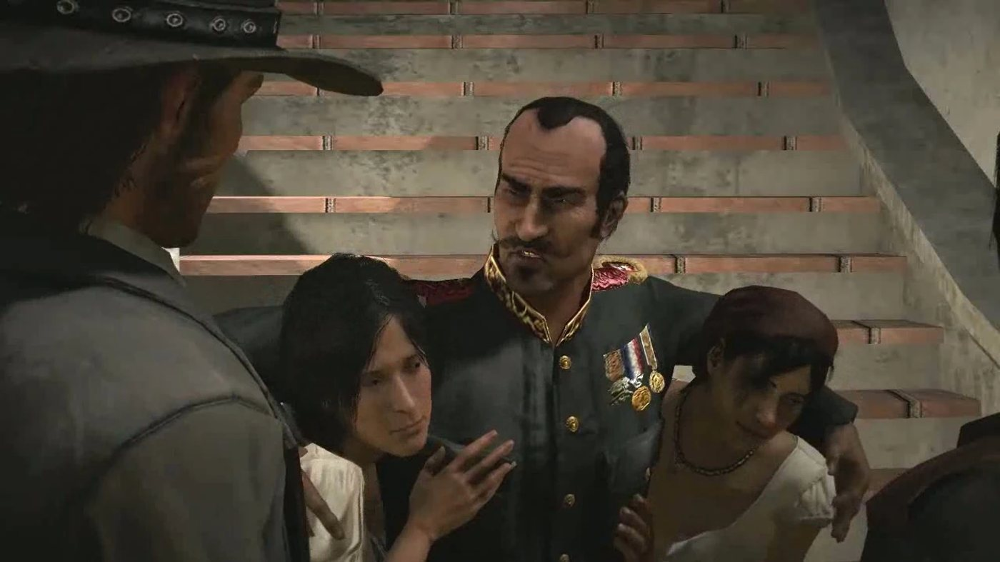
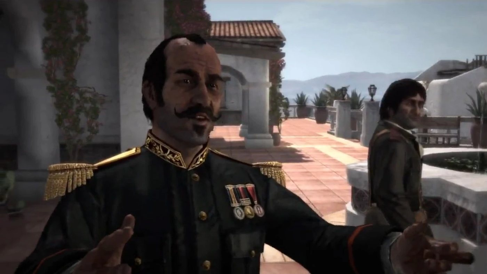
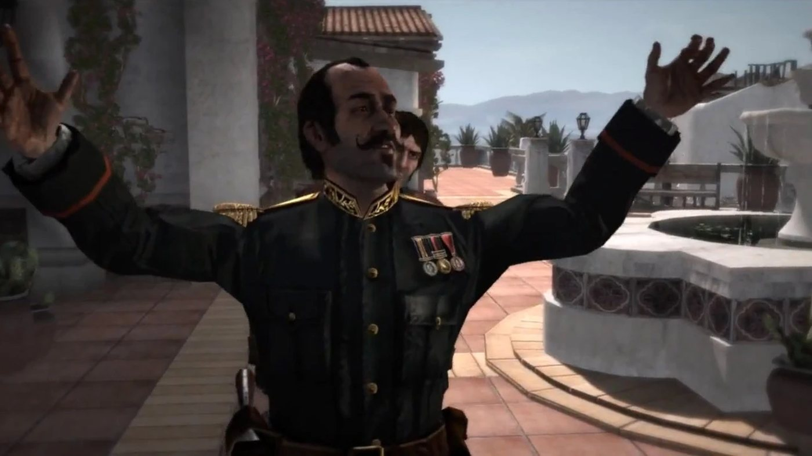
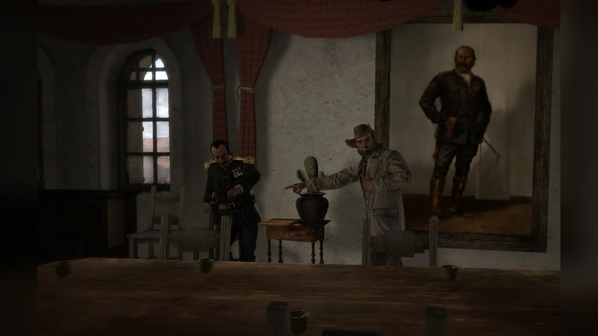
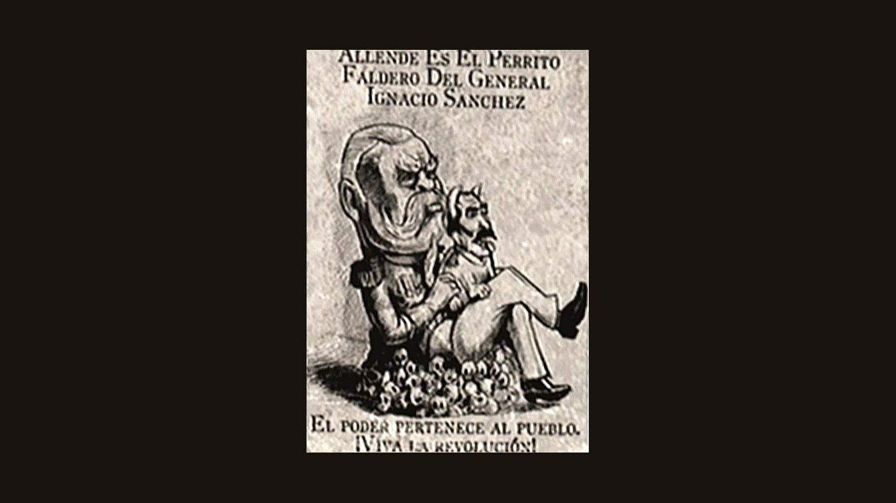

Character · Nuevo Paraiso
Agustin Allende
Colonel Agustin Allende is the governor of Nuevo Paraíso, a Mexican province, in Red Dead Redemption (2010), set in 1911. He commands the army there in the name of President Ignacio Sanchez from his mansion in Escalera, and fights the rebellion led by Abraham Reyes. Bill Williamson and Javier Escuella live under his protection. Through his captain, Vincente de Santa, he promises to find them for John Marston in exchange for his help against the rebels, then has John led into a trap in Chuparosa.
John then joins Reyes. When the rebels take Escalera, Allende flees by stagecoach with Bill and offers him to John to save himself; both men die on the road, shot by John or by Reyes. He is voiced by Gary Carlos Cervantes.
- Name
- Agustin Allende (Agustín on Wikipedia)
- Born
- Date not given in the games; the Game of the Year Edition guide, quoted by the Red Dead Wiki, describes him as 53 years old (born around 1858, according to the wiki)
- Died
- 1911, on the road out of Escalera ("An Appointed Time"), shot by John Marston or by Abraham Reyes depending on the player
- Nationality
- Mexican
- Occupation
- Colonel in the Mexican Army; governor of Nuevo Paraíso under President Ignacio Sanchez
- Residence
- His mansion at the top of Escalera, Punta Orgullo
- Family
- An unnamed uncle, on whose land Javier Escuella's father worked (the Red Dead Wiki says he owned farmland in the province)
- Officers
- Captain Vincente de Santa, Captain Espinoza, Major Raul Zubieta
- Under his protection
- Bill Williamson, Javier Escuella
- Enemies
- Abraham Reyes and his rebels, Luisa Fortuna, John Marston (after Chuparosa)
- Weapons
- Sabre, Cattleman Revolver (Red Dead Wiki); an armored stagecoach with a Gatling gun
- Games
- Red Dead Redemption; multiplayer model (Liars and Cheats)
- Voiced by
- Gary Carlos Cervantes
Biography
Origins
Red Dead Redemption gives no birth date for Agustin Allende in its dialogue. By 1911 he is a colonel of the Mexican Army and the governor of Nuevo Paraíso, the Mexican province across the border from New Austin. He serves the national government of General Ignacio Sanchez, who never appears on screen. His seat is Escalera, a hillside town laid out in tiers. According to the Red Dead Wiki's page on the town, Allende's mansion stands on the top tier and the market at the bottom.
Allende gives a few details on his family in "The Demon Drink". He tells John Marston that his people have lived and worked in the province for a hundred years. His uncle cultivated land in the province, and Javier Escuella's father, a drunk, worked on it as a laborer. The Red Dead Wiki gives another version of his background: it says he was born into a poor family. The wiki bases this on a remark by Abraham Reyes in "The Great Mexican Train Robbery" that does not appear in its own transcript of that mission. According to the same wiki, some townsfolk of Nuevo Paraíso also say that he was once a poor peasant.
The wiki also describes his rule. According to the Red Dead Wiki, he seizes peasant land and sells it to aristocrats. Peasants who protest are beaten or killed, the wiki says. The former owners then end up working the land for almost nothing. The wiki attributes this account to Luisa Fortuna in "Must a Savior Die?", but the line is missing from the transcript of that mission. The wiki adds that Javier Escuella works for Allende as a hired gun. Allende's men, for their part, describe their task as crushing a rebellion: by 1911, the rebels of Abraham Reyes are fighting the army across the province.
Red Dead Redemption (1911)
In 1911, agents of the Bureau of Investigation hold John Marston's wife and son to force him to hunt down his former companions Bill Williamson and Javier Escuella. Allende's name comes up before John even crosses the border. At the end of the first act, in "We Shall Be Together in Paradise", Irish suggests he try the provincial governor, a colonel based in Escalera whose Spanish name he cannot remember, and says he once played cards with him. In Chuparosa, in "The Gunslinger's Tragedy", Landon Ricketts tells John that Colonel Allende runs the region like a feudal king.
Act II: Nuevo Paraíso
John first approaches the government through Allende's officer, Captain Vincente de Santa. In "Civilization, at Any Price", John comes to the manor in Escalera and asks to speak to the commander. De Santa receives him instead. He calls Allende a good and strong man who carries the weight of a million problems, and dismisses what John has heard about the colonel as lies repeated like a parrot. He promises that the colonel will help John if John helps the army. The mission then has John escort a decoy train out of Chuparosa to lure the rebels into a trap.
John meets Allende in person at the start of "The Demon Drink". He finds him at his mansion in Escalera, berating De Santa in Spanish: he calls the captain a crybaby and accuses him of being ready to applaud the day his head ends up on a spike. When he notices John, he asks who he is. De Santa introduces him as the man who helped them defeat Reyes. Allende greets John as the bounty hunter, suggests he may have come to hunt him, since John's country loves to make trouble in his, and wonders aloud whether to have him dragged around town by a horse or set the dogs on him. John answers that he is only here to bring two men to justice and that the colonel's politics are not his concern. Allende then asks De Santa, in Spanish, to find him more interesting company than the woman he brought him the night before.
John asks what Allende knows of the men he hunts. Allende tells him where Escuella comes from (see Origins) and says that men like Javier's father are natural allies for Reyes. He goes on about the local population: he says his people brought them civilization and God, that the locals despise his people and turned their back on God, and that he fights to save them from themselves. He adds that they see only a tyrant in him, would kill him if they could, and need a ruler. When John says he is sorry to hear it, Allende replies that there is nothing to be sorry for: it is a fight between two forces, and force must be used to get one's way. He then asks John for a favor while he looks for the two men. John offers to help once the men are found. Allende answers that he is in no position to negotiate, and sends him to Tesoro Azul, where De Santa's men are fighting the rebels. As John leaves, Allende scolds De Santa for standing behind him.
On the ride, John remarks on the way Allende treats his own men and on his pressure to find young girls. De Santa answers that the colonel needs recreation like anyone else and has no time to court women. At Tesoro Azul, John, De Santa and Captain Espinoza kill the rebels in the village. Espinoza then comes back with a girl in tow, says he heard women crying in a house, and reminds the men that nobody touches them before Allende. When John asks whether all this was done to get women for Allende, Espinoza answers that it is only a bonus, and has him burn the houses with fire bottles. In "Empty Promises", De Santa takes John to Torquemada, an abandoned fort held by the rebels, under urgent orders from the colonel: to kill them all.
"Mexican Caesar" opens at the manor. De Santa and Quique Montemayor push two young women inside; one of them begs not to be forced. Allende greets the women in Spanish and says he loves patriots. He tells John that they will make a patriot of him yet. Asked about the two men, he says he has heard they ride with Reyes, and has De Santa explain the job: escort a train through rebel country, for 20,000 pesos and information on the whereabouts of Javier Escuella. During the conversation, a man chases a captive girl past them. John accepts. On the road, Espinoza boasts of his standing with Allende and says he suspects the assignment is a trap (see Relationships). The convoy and the train are attacked by rebels, and John defends them with a Gatling gun until they reach the army's base camp. The money never comes: in "Cowards Die Many Times", John reminds De Santa of the 20,000 pesos he was promised for that mission.
On the rebel side, Allende is described as the enemy. In "Landon Ricketts Rides Again", the army is after Luisa Fortuna, and Ricketts tells John that her looks are normally enough to interest Allende. In "The Mexican Wagon Train", Luisa reports that Allende is sending untried prisoners to their deaths, among them a writer named Castillo and a local official who refused to evict smallholders behind on their taxes. In "Must a Savior Die?", John rescues Abraham Reyes from a firing squad at El Presidio; the executioner tells Reyes, in Spanish, that he will pay for his treason and for wanting to overthrow Allende. Once freed, Reyes admits that he had taken John for the American working for Allende.
In "Cowards Die Many Times", De Santa brings John to Allende, who is fondling a woman on a bench on his patio. Allende tells the woman not to be so conventional, and says he will save her for later or kill her and her whole family, since they are probably rebels. He then welcomes John as a rare find, a gringo who is a friend of his country, and announces that the men John is hunting have been captured in Chuparosa. He tells John to ride there with De Santa and take possession of them, as his gift for John's help. John answers that he has a wife and son at home whom he misses. Allende replies that they all do, and tells De Santa to take care of him. On the way, John asks whether the colonel ever leaves his villa; De Santa answers that Allende is both military commander and governor of the province, and must be kept out of harm's way.
In Chuparosa, De Santa sends John into the church, where the prisoners are supposed to be held. Nobody is there. A soldier knocks John out, and De Santa's men prepare to execute him. Reyes and his rebels attack the town at that moment and save him, and John kills Captain Espinoza in the town hall. Bill and Javier were never in Chuparosa. The transcripts do not show who gave the order to kill John; according to the Red Dead Wiki, Allende had ordered De Santa to do it. After the battle, Reyes tells his rebels that they will fight on until local tyrants like Allende are gone, and that Allende will one day know justice. In "Father Abraham", John tells Luisa that Allende betrayed him and that he saw him do things that disgust even him.
In the same mission, Luisa tells John that her father was killed the day before. According to her, the army accused him of treason, cut out his heart and fed it to the dogs; she blames Allende for it, and says he then took the honor of two young girls. She adds that Allende knows the rebels are close to victory and has sent for reinforcements, and that Reyes asked in person for John to stop them before they reach Escalera. Luisa calls Allende pure evil and swears to cut his heart out one day. John and the rebels blow up the convoy.
Reyes gives John his own view of Allende in "The Great Mexican Train Robbery". He calls him a coward who beats the people he swore to protect and enjoys it, and says that Sanchez controls everything he does (see Names). The army train that John and the rebels rob in Chuparosa carries supplies for Allende's forces, and Reyes says that Allende will pay a high price that day. In "Captain De Santa's Downfall", De Santa executes a rebel at El Sepulcro in the name of Allende's government, then dies there, shot by John or by the rebels depending on the player's choice. The rebel Victor tells John that Allende is scared and making mistakes, and that with Espinoza and De Santa dead, the army has no leaders and the rebels must move on Allende at once.
In "The Gates of El Presidio", Reyes tells John what his spies have learned: Bill and Javier paid Allende to hide them, and have been under his protection since John arrived in Mexico. On the wagon, Reyes says he often thinks of the day he will storm Allende's mansion in Escalera and sleep in his silk sheets. After the rebels take El Presidio, John catches Javier; depending on the player, he captures him or kills him. If Javier is captured, he tells John that Bill is not there, but with Allende.
"An Appointed Time" is the last mission of the second act. The army has executed rebels in Escalera and captured Reyes. John frees him after Luisa is shot dead by the soldiers and Major Raul Zubieta falls in a duel. John then frees rebel prisoners from Allende's jail, and the rebels storm the hill. John mans a Gatling gun and, on Reyes's signal, blows up the gunpowder barrels the rebels have set against the gate. He then holds the gate against soldiers coming up the slope. As the rebels chop down the door of the mansion, Allende calls out to Bill that they can still reach his stagecoach, and Bill tells him to go while he covers him. The two men flee in an armored stagecoach. John and Reyes ride after them and stop it.
Once the coach is stopped, Bill asks Allende what he is doing. Allende answers that he is buying his freedom, calls him a dumb ape and orders him out of the wagon. He then comes out himself, calls on them not to shoot and offers Bill to John in exchange for his life, promising to leave the country. He pins Bill to the ground. While Bill and John trade insults, Allende says in Spanish, in the transcript's version, that he will sleep in the bed of the man he is speaking to that night; the transcript does not say whom he addresses. The player decides what happens next. John can shoot Allende, Bill or both; Reyes shoots whichever man John spares, and both men if John fires at neither. In the version given by the transcript, Reyes kills Allende, and Bill is shot by Reyes or by John as he reaches for Allende's gun. Allende dies on the road outside Escalera in 1911. Reyes then proclaims that Allende is dead and that Mexico is his.
According to the Red Dead Wiki, the rebels then take over Escalera and replace the army as the law in the town. The Blackwater Ledger reports the news in issue No. 58, on sale after the mission, under the headline "'Tyrannical' Governor Overthrown. Is Sanchez Next?". The article opens: "The bloody rebellion in Mexico claimed its first high profile victim yesterday, with the killing of a state governor." It says Allende "was killed yesterday, following a fire fight with rebels", and adds: "Unsubstantiated reports suggest American mercenaries may have been fighting on both sides during the battle." It also describes the dead governor: "Colonel Allende, who had been implicated in several massacres and other atrocities in the region, was not a popular governor and locals cheered when they heard the news of his demise." According to the same article, Reyes claimed it was a great victory that would lead all the way to the Presidential Palace in Mexico City. Two issues later, the paper reports the fall of Sanchez's government and Reyes's rise to power.
Personality
The Red Dead Wiki quotes the Game of the Year Edition guide of Red Dead Redemption: "This gentleman is a 53-year-old, sadistic, military leader of a local Mexican province. The province is in the midst of a rebellion. Many years ago, Allende was an idealist, but he's become a vicious cynic with a love of torture and sexual abuse. Takes pleasure in all manner of vices. He is intelligent, corrupt, and brutal."
On screen, he insults Captain de Santa in Spanish in front of John. He threatens John at their first meeting (see Biography). He receives him on the terrace of his mansion in Escalera, with young women brought to him by his soldiers. He speaks of the people of the province with contempt.
In his own words
To John, at their first meeting in "The Demon Drink": "Ah, perhaps you come to hunt me, eh? Your country loves to make trouble in mine." On his family and the province, in the same scene: "My people have lived and worked here for a hundred years. We brought civilization, and these people, these fucking monkeys, despise us." When John asks to be given the two outlaws first: "You are in no position to negotiate." Welcoming John back in "Cowards Die Many Times": "You know, you are a rare find. A gringo who is also a friend of our country."
Names
John, Reyes and the newspapers call him Colonel Allende or Allende; his soldiers say el Coronel. De Santa calls him "His Excellency, El Coronel" in "Mexican Caesar". Reyes calls him "una marioneta", a puppet, and "a perrito for General Sánchez", which he explains as a little dog that licks the general's feet. According to the captions of the Red Dead Wiki, two rebel posters call him the lapdog and the puppet of Sanchez; the wiki's page on Sanchez places these posters in Nosalida. Irish, who says he played Three Card Stud with him, or perhaps Four Card Monty, remembers only "Colonel something or other...some Spanish name". Wikipedia spells his first name Agustín.
Appearance
He is a man of about fifty with slicked-back black hair, a receding hairline, a curled handlebar mustache and a tuft of beard under the lip. He wears a black army uniform with a gold-embroidered collar, gold fringed epaulettes and three medals on the chest. According to the Red Dead Wiki, he and Major Raul Zubieta are the only soldiers in the game with medals on their uniforms.
Relationships

John Marston
Allende promises to find Bill Williamson and Javier Escuella for John in exchange for his help against the rebels, then sends him to Chuparosa, where De Santa has him arrested and set before a firing squad (see Biography). John tells Luisa later that Allende betrayed him and that he saw him do things that disgust even him. John stops the colonel's stagecoach on the road out of Escalera (see Biography).

Abraham Reyes
The leader of the revolt against him. Reyes says that everything Allende does is controlled by Sanchez, and that it is worse that Allende enjoys beating the people he swore to protect. His rebels take Escalera, and Allende dies on the road, shot by John or by Reyes (see Biography).

Vincente de Santa
His captain and go-between with John. Allende insults him in Spanish in front of John (see Biography) and tells him he is not his shadow. De Santa brings him young women from the villages, which he presents as patriots. He defends his colonel to John: "Colonel Allende controls any situation he is in because he knows the situation can never be allowed to control him."
De Santa carries out the betrayal of John in Chuparosa, then dies at Sepulcro, shot by John or by the rebels; at the execution he oversees there, he condemns a rebel to death in the name of Colonel Allende's government (see Biography).

Bill Williamson
Bill lives under the colonel's protection in Escalera; according to Reyes, he and Javier paid Allende to hide them. When the rebels break down the door of the mansion, Bill covers Allende's run to the stagecoach. Once the coach is stopped, Allende pushes him out and offers him to John in exchange for his own life. Both men die on the road (see Biography).

Javier Escuella
Allende tells John that Javier comes from the province and that his father, a drunk, worked land farmed by Allende's uncle (see Biography). Javier is under his protection at El Presidio; when John corners him there, Javier says that Bill is with Allende (see Biography).

Luisa Fortuna
Luisa blames Allende for the death of her father, killed by the army, and says he took the honor of two young girls (see Biography). She tells John she cannot forgive him for having helped Allende. She calls the colonel pure evil (see Quotes). She is killed in Escalera on the day the town falls (see Biography).

Landon Ricketts
The gunslinger never meets him. In "The Gunslinger's Tragedy", he describes him to John as a man who rules like a feudal king and a dreadful person. When Luisa reports that Allende is sending a writer and a local official to their deaths, Ricketts says that for once he agrees with the colonel (see Quotes). He then fights the colonel's soldiers alongside John (see Biography).

Irish
In "We Shall Be Together in Paradise", Irish points John to the provincial governor in Escalera, whose name he cannot remember (see Names).
Espinoza
The army captain, De Santa's rival. He calls himself Allende's right arm and one of the few men the colonel respects (see Quotes). He says the colonel told him that De Santa had praised his conduct at Torquemada and called him a hero; then, in the transcript, "He asked" for Espinoza to be given the munitions escort of "Mexican Caesar", without making clear whether "he" is De Santa or Allende. John kills him in Chuparosa (see Biography).
Ignacio Sanchez
The president of Mexico, never seen in the game, in whose name Allende governs Nuevo Paraíso. Reyes calls Allende his puppet (see Names). The Blackwater Ledger reports the fall of Sanchez's government a few issues after Allende's death (see Biography).
Reyes's rebels
The rebels fight his army across the province and storm his mansion in Escalera after John frees the prisoners of his jail (see Biography). After the death of De Santa, Victor, one of them, tells John that the colonel is afraid and making errors (see Quotes). The executioner at El Presidio asks Reyes whether he really thought he could overthrow Allende.
Raul Zubieta
The army major who holds Reyes prisoner in Escalera on the day of the assault; John kills him in a duel (see Biography). The Red Dead Wiki lists Allende among his affiliations.
His uncle
Not named in the game. Allende mentions him once, as the man whose land Javier's father worked (see Biography). The Red Dead Wiki lists him as his only known relative.
Herbert Moon
The Armadillo shopkeeper lumps him with the other Mexican leaders in a line quoted by the Red Dead Wiki: "Sanchez, Allende, De Santa, Reyes; all the same! They just want Armadillo rail rides."
Weapons and stagecoach
The Red Dead Wiki lists a saber and a Cattleman Revolver as his weapons; the French-language wiki calls the blade a golden sword. He owns an armored stagecoach with a Gatling gun mounted on the back, which appears only in "An Appointed Time". According to the mission page, the coach carries a driver, a guard riding shotgun beside him and a gunner on the Gatling, and two riders follow it. John stops it by killing the driver or the horses.
Missions
Allende appears on screen in four story missions of Red Dead Redemption, all in the second act, set in Nuevo Paraíso. He gives none of them: Captain Vincente de Santa gives the first three and Abraham Reyes the last. According to the Red Dead Wiki, he is the only major character of the game who never gives John Marston a mission directly. His name comes up in many other missions of the act, on both sides of the war. At the end of the first act, he is also mentioned, though not by name.
Appearances
| Mission | Act | Allende's role |
|---|---|---|
| The Demon Drink | Act II: Nuevo Paraíso | First meeting with John at his mansion in Escalera; he sends him to Tesoro Azul with De Santa. 27th mission, given by De Santa. Rewards: 50 dollars, a Fire Bottle, 350 fame; the Tesoro Azul hideout becomes available. |
| Mexican Caesar | Act II: Nuevo Paraíso | Receives two women brought by De Santa and has De Santa offer John 20,000 pesos and information on Javier Escuella to escort an army train. 29th mission, given by De Santa. Rewards: 75 dollars and 200 fame; dynamite goes on sale and Butter Bridge is rebuilt. |
| Cowards Die Many Times | Act II: Nuevo Paraíso | Tells John that Bill Williamson and Javier Escuella have been captured in Chuparosa and sends him there with De Santa, who betrays him. 36th mission, given by De Santa. Rewards: up to 75 dollars from De Santa's shooting contest, 50 honor and 250 fame; unlocks the Reyes strand. |
| An Appointed Time | Act II: Nuevo Paraíso | Flees the rebel assault on his mansion in an armored stagecoach with Bill, offers Bill to John for his life, and is shot by John or by Reyes. 41st mission, last of the act, given by Reyes. Rewards: up to 535 honor and 300 fame, access to West Elizabeth; achievement "No More Fancy Words". |
Missions in which he is mentioned
| Mission | Act | Link with Allende |
|---|---|---|
| We Shall Be Together in Paradise | Act I: New Austin | Irish suggests John try the provincial governor based in Escalera, a colonel whose name he has forgotten, and says he played cards with him (see Names). 25th mission, last of New Austin. |
| Civilization, at Any Price | Act II: Nuevo Paraíso | John asks for the commander at Allende's manor; De Santa defends the colonel (see Quotes) and has John escort a decoy train out of Chuparosa. 26th mission. |
| Empty Promises | Act II: Nuevo Paraíso | De Santa leads John to the rebel-held fort of Torquemada on the colonel's urgent orders: to kill them all. 28th mission. |
| The Gunslinger's Tragedy | Act II: Nuevo Paraíso | Landon Ricketts tells John that Allende runs the region like a feudal king (see Quotes). 30th mission. |
| Landon Ricketts Rides Again | Act II: Nuevo Paraíso | Ricketts says that Luisa Fortuna's looks are normally enough to interest Allende. 31st mission. |
| The Mexican Wagon Train | Act II: Nuevo Paraíso | Luisa reports that Allende is sending untried prisoners to their deaths; Ricketts says that for once he agrees with Allende (see Quotes). 33rd mission. |
| Must a Savior Die? | Act II: Nuevo Paraíso | The executioner at El Presidio condemns Reyes for wanting to overthrow Allende; Reyes says he took John for the American working for Allende. 35th mission. |
| The Great Mexican Train Robbery | Act II: Nuevo Paraíso | Reyes asks John what he thinks of Allende and says Sanchez controls everything he does (see Names and Quotes); the rebels rob an army supply train. 37th mission. |
| Father Abraham | Act II: Nuevo Paraíso | Luisa blames Allende for her father's death and says Reyes wants Allende's reinforcements stopped before Escalera; John says Allende betrayed him (see Quotes). 38th mission. |
| Captain De Santa's Downfall | Act II: Nuevo Paraíso | De Santa executes a rebel at El Sepulcro in the name of Allende's government; Victor says the rebels must now move on Allende. 39th mission. |
| The Gates of El Presidio | Act II: Nuevo Paraíso | Reyes says Bill and Javier paid Allende to hide them; if captured, Javier says Bill is with Allende. 40th mission. |
Quotes
The lines below are given in the original English. Mission lines are checked against the mission transcripts of the Red Dead Wiki. The multiplayer lines and Herbert Moon's lines come from the wiki's quote lists, as no transcript exists for them.
What others say about him
Local government, foul bunch. Colonel Allende, he runs this place like a feudal king. He's an awful individual.
Landon Ricketts, The Gunslinger's Tragedy (RDR1, Act II), in ChuparosaMarston: Even I've heard about the Colonel down here. He's not famous for his compassion. / Vincente: This is the point. Have you met Coronel Allende? Do you know him? No, like a papagayo, you just repeat lies you heard. / Marston: Maybe. / Vincente: Allende is a good man, a strong man. He carries the weight of a million problems on his shoulders. / Marston: Am I supposed to pity him?
Civilization, at Any Price (RDR1, Act II), on the wagon ride to ChuparosaMarston: Pressure to find young girls? / Vincente: The Colonel needs recreation like anybody else. He does not have time to court women. He's waging a war on ignorance, and is impatient for victory. He is trying to inspire wisdom in those more stupid than himself.
The Demon Drink (RDR1, Act II), on the ride to Tesoro AzulEspinoza: De Santa licks the Colonel's boots and plays with his waiter friend. That is all. I am Allende's brazo derecho. His right arm. I am one of the few men he respects. / Marston: Is that right? You and him have something special do you?
Captain Espinoza, Mexican Caesar (RDR1, Act II), on the road to ChuparosaMarston: Does your brave Colonel ever leave his villa? I haven't seen him anywhere near a fight yet. / De Santa: He is the military commander, but he also governs the province. He must be protected, kept out of harm's way.
Cowards Die Many Times (RDR1, Act II), on the wagon to ChuparosaMarston: Are you married? Or do you rape young girls like your Colonel? / De Santa: No, I could never touch a woman like that! It is not my way! But, for them, it is an honor to please their leader.
Cowards Die Many Times (RDR1, Act II), during De Santa's shooting contestLandon: Writers and government officials. For once, I agree with Allende. Some men need to be killed. / Luisa: Mr. Ricketts!
The Mexican Wagon Train (RDR1, Act II), after Luisa reports the executions without trialMarston: Allende betrayed me, and I saw him do bad things. Things that disgust even me. / Luisa: Allende es pura maldad. One day I will cut his heart out.
Father Abraham (RDR1, Act II), by the campfire. Luisa's Spanish line means "Allende is pure evil."Abraham: I have to know. What did you think of Agustin Allende, John? / Marston: I saw enough to know he ain't a good man. / Abraham: It is bad enough he beats the people he swore to protect. But it is worse that he enjoys it. / Marston: Something must have made him that way. / Abraham: Cowardice made him that way, my friend. That and Sánchez, of course.
Abraham Reyes, The Great Mexican Train Robbery (RDR1, Act II), on the ride to ChuparosaAbraham: Soon it will be me sleeping on those silk sheets, and the colonel lying with the cucarachas! / Marston: From what I've seen of Allende, you might want to wash those sheets. / Abraham: You might be right, my friend.
The Gates of El Presidio (RDR1, Act II), on the wagon rideAllende is scared, and making mistakes. We are closer to victory than you think.
Victor, Captain De Santa's Downfall (RDR1, Act II), on the ride to El SepulcroYa know, if Johns is elected Governor, he's gonna open the rail lines to Allende.
Herbert Moon, the Armadillo shopkeeper (quote list of the wiki's Herbert Moon page)
Red Dead Redemption, Act II
Allende: Ah, perhaps I should tie you to a horse and let it drag you around town, or let the dogs fight you, huh. Then, see what you say? / Marston: I'd say the same thing. I'm here to bring two men to justice. Nothing more. Your politics or ideas of entertainment are not my concern.
The Demon Drink (RDR1, Act II), first meeting with John in Escalera, after he suggests John may have come to hunt himWe brought them God, and they turned their back on him. Now, I fight to help them from themselves. To save them from themselves. I see in their faces, that they would kill me if they could. They see only a tyrant. That is the way it is. These people need a ruler.
The Demon Drink (RDR1, Act II), telling John about the people of the provinceMarston: Well, I'm sorry to hear that. / Allende: Sorry? Why be sorry? It is the way of mankind. A fight between two forces. Que sera, sera. What will be, will be. But, I know one thing, Señor Marston. Force, force must be used, if you are to have your own way.
The Demon Drink (RDR1, Act II), right afterFantastic. I love patriots. Hey, Señor Marston! You here to fight the war? At least we'll make a patriot of you yet.
Mexican Caesar (RDR1, Act II), as De Santa brings him two young womenMarston: Thank you. If it's all the same, I'd like to collect the men. I have a wife and son at home whom I miss. / Allende: Don't we all, amigo, don't we all?
Cowards Die Many Times (RDR1, Act II), after offering John more of his hospitalityAllende: Come on! We can still get to my stagecoach! / Bill: Go, then! I'll cover you!
An Appointed Time (RDR1, Act II), as the rebels break down the door of his mansionBill: What the hell are you doing? / Allende: Buying my freedom, pendejo! Now shut up, you dumb ape, and get out of the wagon! Apúrate! I'm coming out! Don't shoot! Here. Take Williamson. Just let me live. I will leave the country. I promise.
An Appointed Time (RDR1, Act II), once the stagecoach is stopped, as he hands Bill overEsta noche, duermo en tu cama, cabrón.
An Appointed Time (RDR1, Act II), his last recorded line in the transcript, in Spanish, while Bill and John trade insults. Translation: "Tonight, I sleep in your bed, bastard."
Red Dead Redemption multiplayer
El poder nunca será tuyo!
Red Dead Redemption multiplayer, in Spanish (quote list of the wiki). Translation: "The power will never be yours!"Ja ja, no has ganado nada!
Red Dead Redemption multiplayer, in Spanish (quote list of the wiki). Translation: "Ha ha, you haven't won anything!"Eres un cobarde!
Red Dead Redemption multiplayer, in Spanish (quote list of the wiki). Translation: "You are a coward!"No eres un hombre de pueblo!
Red Dead Redemption multiplayer, in Spanish (quote list of the wiki). Translation: "You're not a man of the people!"¡Vámonos! Date prisa cabrón!
Red Dead Redemption multiplayer, in Spanish (quote list of the wiki). Translation: "Come on! Hurry up, asshole!" He shouts a similar line in the transcript of "An Appointed Time" as he flees.Get away from me!
Red Dead Redemption multiplayer (quote list of the wiki), one of his few lines in English
Development and performance
Casting
Colonel Allende appears in Red Dead Redemption, released in 2010. Wikipedia's article on the game credits Gary Carlos Cervantes with the role and describes the character as "the state's tyrannical governor"; the Red Dead Wiki credits him as the voice of Allende. Cervantes is an American actor born on January 24, 1953, in Maywood, California, according to the TMDb database. Wikipedia's cast lists name him in Commando (1985), as Diaz, and in Wild Wild West (1999), as Professor Guillermo Escobar, a scientist kidnapped by the villain. No interview in which he discusses Red Dead Redemption was found, and no source consulted names a performer for Allende's motion capture.
Before release
Rockstar released artwork of the colonel before launch. According to the Red Dead Wiki, he looks heavier in this pre-release artwork than in the game, his uniform has no epaulettes, and he has no tuft of beard under the lip. The wiki's page on the game's cut content lists nothing else about him.
Reception
Reviews
Game Informer's review of Red Dead Redemption, written by Matt Bertz and published on May 17, 2010, does not name Allende. It sums up the Mexican part of the story as John having to "get cozy with both the corrupt ruler of the border region and the upstart rebel hell-bent on taking power for himself."
Villain rankings
In "Red Dead Redemption: Every Villain Ranked From Worst To Best", published by WhatCulture on February 7, 2022, Matt Thompson ranks Allende 13th of 15 villains from both games. He writes that "Colonel Allende could have had more depth written into his character". He adds that the colonel's corruption, taste for murder and sexual assaults show in his words, "but it's all surface level", and that the game never explains how he rose to power and came to command such an army.
Academic study
In "The Mustang Diaries: A Study of Mexico in Red Dead Redemption 1", published in the Revista Panamericana de Comunicación (vol. 4, no. 2, 2022), Javier Aldape, of Texas A&M University, writes that the game "has two versions of caudillos in the personification of Colonel Agustin Allende on the Federales side and Abraham Reyes, the leader of the Mexican rebeldes." He compares the women and alcohol of Allende's house to period photographs of military men such as Victoriano Huerta with a cigar and a glass of cognac. He concludes that "Allende falls victim to his desire to rule Mexico through betrayals", in the manner of the caudillos of the time.
Other media and legacy
Multiplayer
Allende became a playable character model in the multiplayer mode of Red Dead Redemption with the Liars and Cheats Pack, detailed by Rockstar on August 27, 2010 and released on September 21, 2010. Players select him in the Damnation section of the Outfitter, with Abraham Reyes, Bill Williamson, Dutch van der Linde, Edgar Ross, Harold MacDougal and Irish. Most of his multiplayer lines are in Spanish (see Quotes). The versions of Red Dead Redemption released on PlayStation 4 and Nintendo Switch on August 17, 2023, then on PC on October 29, 2024, contain the story and Undead Nightmare but not the multiplayer mode, so the Allende model is not available in them.
Marketing
Rockstar released official artwork of Allende for Red Dead Redemption, and an alternate artwork of him appears in the Red Dead Wiki's gallery. He stands next to John Marston on the cover art of the Game of the Year Edition. Allende does not appear in Red Dead Redemption 2 or in Red Dead Online; the Red Dead Wiki lists him only in Red Dead Redemption.
Trivia
- According to the mission page of "Mexican Caesar", Allende bends over and vomits at the end of the opening cutscene.
- According to the same mission page, the gates of Allende's villa stay locked from "Mexican Caesar" until "An Appointed Time", and the player cannot enter. The wiki's page on Escalera dates the closing to after "The Gates of El Presidio" and says soldiers then patrol the town in greater numbers.
- According to the mission page of "An Appointed Time", if the player lassoes Bill while Allende is pinning him down, Reyes shoots both men, which can sometimes make the mission impossible to complete.
- According to the same page, in rare cases, when John shoots Bill, Reyes does not shoot Allende at once: Allende pleads, runs off into the brush beside the road and is shot in the back by Reyes, outside of any cutscene. In other cases, Allende runs off and Reyes does not shoot him either, which leaves the player stuck until the last checkpoint is reloaded.
- According to the mission page, Allende's body sometimes stays on the road east of Escalera after the mission, wherever the stagecoach was stopped. It cannot be searched, but if it is set on fire with fire bottles, screams come from the body.
- According to the Red Dead Wiki, Allende's portrait still hangs inside his villa after his death.
- According to the mission page of "An Appointed Time", the gates of Allende's mansion are still lying on the ground in pieces when the player returns to Escalera in 1914.
- According to the same page, shortly after the mission, a random encounter can show army soldiers executing rebels for speaking out against Allende, although he is already dead.
- Allende does not appear in Undead Nightmare, the non-canon expansion. According to the wiki's Undead Nightmare page, Reyes has moved into Allende's former mansion in Escalera by then.
Gallery





